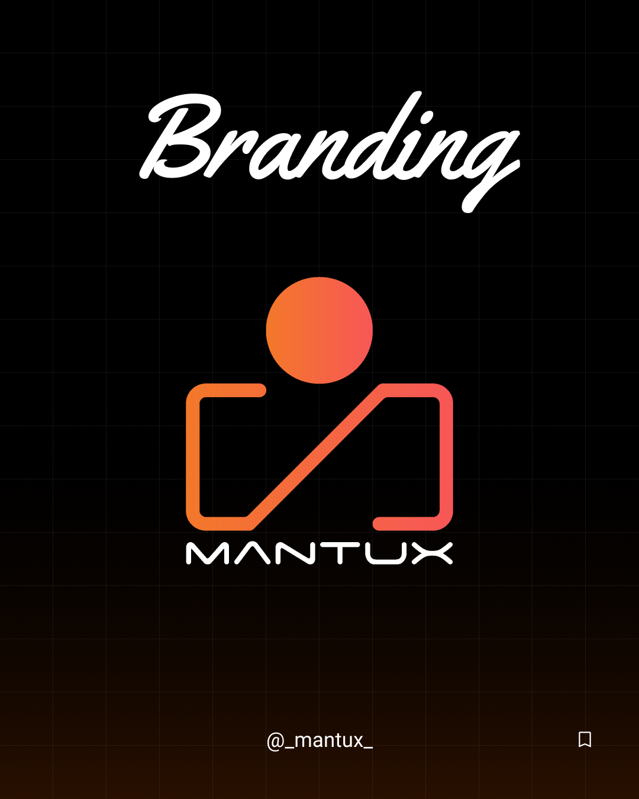
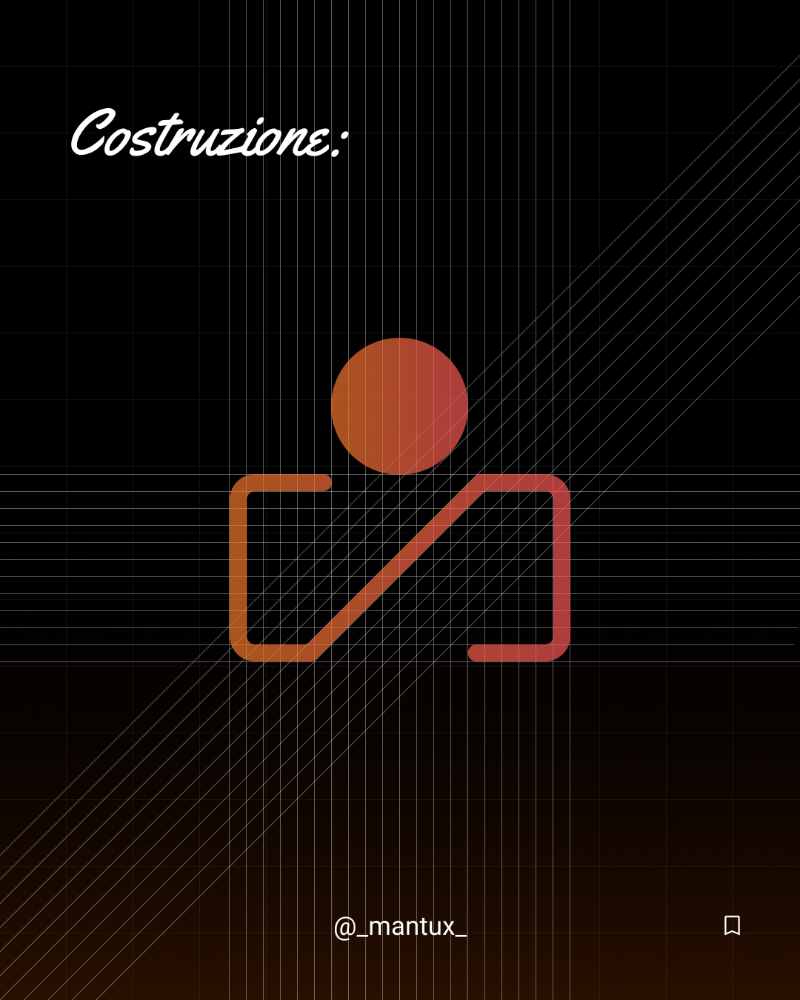
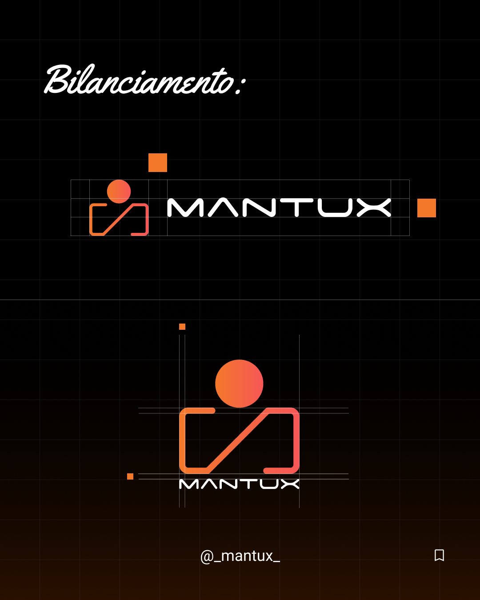
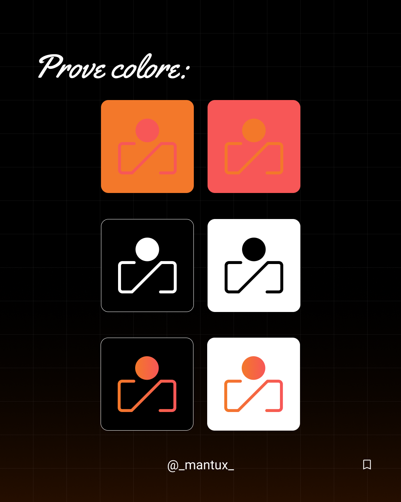
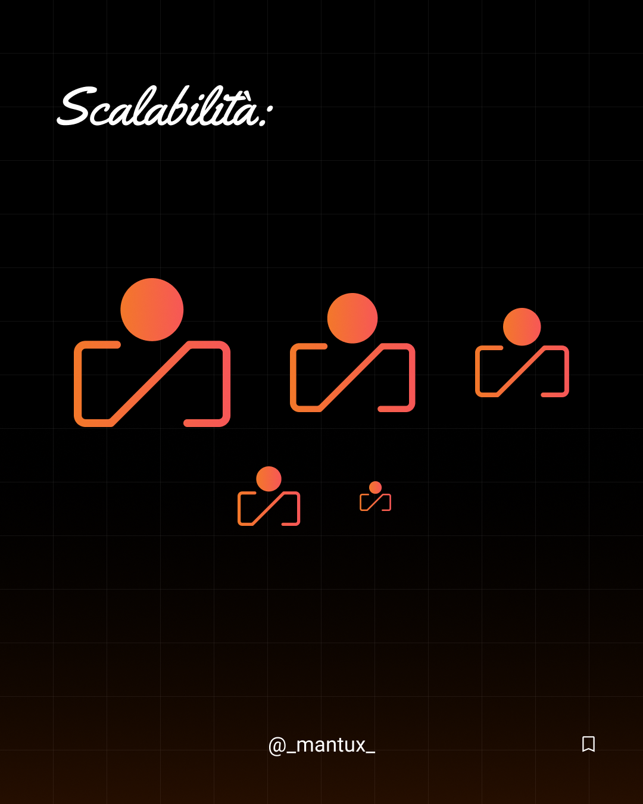
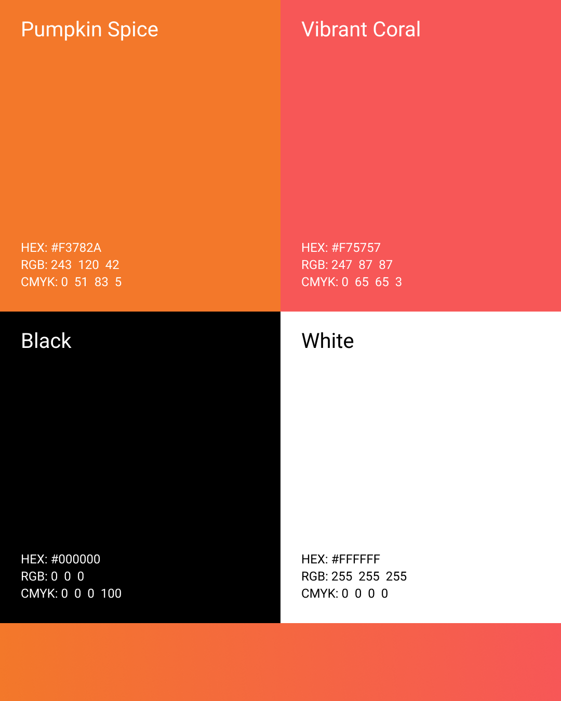
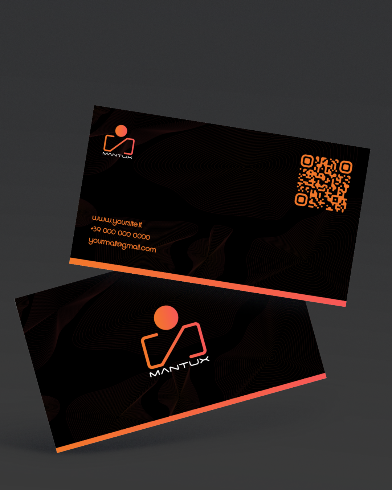

Mantux
Branding

Intro
Mantux è il personal brand di Raffaele, designer e sviluppatore web con una doppia anima: la precisione tecnica del codice e la sensibilità visiva del design. L'identità nasce dall'esigenza di rappresentare una figura ibrida — capace di costruire prodotti digitali tanto sul piano estetico quanto su quello funzionale. Il brand unisce un'estetica scura e contemporanea a un'energia visiva calda, comunicando creatività concreta e identità riconoscibile.
Brief
Il personal brand doveva rispondere a un'esigenza precisa: avere un'identità visiva coerente e professionale da portare in contesti reali — portfolio, social, biglietti da visita, presentazioni ad agenzie e clienti. Il brief creativo richiedeva un logo minimal, moderno e memorabile, capace di sintetizzare la doppia natura design + development senza risultare generico. L'obiettivo era costruire un sistema visivo che comunicasse creatività, competenza e carattere, distinguendosi nel panorama dei freelance italiani under 20.
Ricerca & Insight
Il punto di partenza è stata un'analisi dei personal brand nel settore del design e dello sviluppo web. Ne è emerso un pattern ricorrente: la maggior parte dei freelance junior adotta identità visive neutre, quasi intercambiabili — loghi tipografici minimal, palette monocromatiche, nessun elemento distintivo.
La direzione opposta era quella giusta: un'identità con carattere forte, riconoscibile a colpo d'occhio, capace di comunicare personalità prima ancora del portfolio. La moodboard ha orientato la ricerca verso un linguaggio visivo che unisse energia, precisione costruttiva e calore umano.
Dall'analisi sono emersi tre insight chiave:
- Un personal brand efficace deve rispecchiare la personalità reale, non solo il settore professionale.
- Il colore è il vettore emotivo più immediato: una palette calda in un settore dominato dai blu crea differenziazione immediata.
- Il logo deve funzionare come firma — riconoscibile anche senza il wordmark, anche a dimensioni ridotte.
Sistema visivo
Logo
Il marchio di Mantux nasce dalla reinterpretazione visiva della sintassi da terminale [/] —
le parentesi quadre come contenitore, lo slash come elemento di rottura e movimento.
Nella versione finale, questa logica si traduce in una figura stilizzata: due brackets
che formano un frame aperto, uno slash diagonale che li attraversa, e un cerchio
in cima che rappresenta la testa — ovvero la persona dietro il brand.
Il segno è costruito su una griglia modulare che garantisce:
- proporzionamento coerente tra spessori e spazi negativi
- leggibilità a qualsiasi scala
- un equilibrio visivo tra geometria e umanità

La diagonale dello slash introduce dinamismo e direzione — la sensazione di qualcuno in movimento, che progetta e costruisce. Il cerchio in alto rompe la simmetria del frame e porta il marchio verso una dimensione più personale e umana. Il risultato è un logo che comunica creatività, tecnicità e identità individuale in un unico segno essenziale.
Bilanciamento
Il sistema prevede due configurazioni principali: versione orizzontale con simbolo e wordmark affiancati, e versione verticale con simbolo sopra e wordmark sotto. Entrambe le versioni sono state costruite su griglia, verificando che le proporzioni tra simbolo e lettering risultassero equilibrate e stabili in ogni contesto d'uso.

Prove colore
Il logo è stato testato su tutti i fondali previsti dal sistema visivo — Pumpkin Spice, Vibrant Coral, Black e White — verificando leggibilità e resa cromatica in ogni combinazione. Le prove dimostrano che il marchio mantiene forza e riconoscibilità sia nella versione gradiente che in quella monocolore, su sfondi chiari e scuri.

Scalabilità
Il simbolo è stato testato in scala decrescente — dalla versione grande fino alle dimensioni più ridotte, equivalenti a un'icona app o favicon. La struttura geometrica essenziale del marchio garantisce che forma e carattere rimangano leggibili anche ai formati minimi, senza perdere riconoscibilità.

Palette colori
La palette di Mantux è costruita su quattro colori con funzioni distinte: due colori brand ad alta energia e due colori strutturali neutri.

Pumpkin Spice (#F3782A):
Colore primario — parte iniziale del gradiente brand.
Comunica:
- energia e creatività
- calore e accessibilità
- originalità in un settore dominato dai toni freddi
Vibrant Coral (#F75757):
Colore primario — parte finale del gradiente brand.
Aggiunge al brand:
- tensione visiva e dinamismo
- un carattere deciso e diretto
- continuità cromatica con Pumpkin Spice attraverso la transizione gradiente
Il gradiente da Pumpkin Spice a Vibrant Coral non è solo decorativo: rappresenta il passaggio dal piano tecnico a quello creativo, dalla struttura all'espressione.
Black (#000000):
Colore di struttura — sfondo dominante del sistema visivo.
- massimizza il contrasto e la leggibilità del gradiente brand
- comunica serietà e profondità
- posiziona il brand in un registro professionale e premium
White (#FFFFFF):
Colore di struttura — usato per testi, wordmark e versioni su fondo scuro.
- garantisce pulizia e leggibilità in ogni contesto
- bilancia l'energia della palette brand
- permette al marchio di respirare su composizioni dense
Tipografia
Per Mantux è stato scelto Space Age, un carattere display dal forte carattere
futuristico, con terminali tagliati netti e forme geometriche che richiamano
l'estetica dei display digitali e dell'interfaccia da terminale.
Nel contesto del brand, Space Age svolge tre funzioni precise:
-
Identità tecnica
Le forme angolari e la struttura modulare del font riflettono la natura sviluppo-oriented del brand. Il testo non è mai neutro: porta con sé il carattere di chi lavora con il codice. -
Differenziazione
In un settore dove molti personal brand freelance scelgono sans-serif generici, Space Age impone una personalità immediata e riconoscibile. Il wordmark MANTUX in questo font diventa esso stesso un elemento grafico. -
Coerenza con il simbolo
L'estetica da terminale del font richiama direttamente la logica costruttiva del logo, nato dalla sintassi[/]. Simbolo e lettering parlano la stessa lingua visiva.
Applicazioni di stampa
Il sistema visivo è stato declinato su supporto fisico per verificarne la coerenza e l'efficacia in un contesto reale. Il biglietto da visita è il primo punto di contatto tangibile del brand con clienti e potenziali collaboratori.
Biglietti da visita
Il biglietto da visita adotta il Black come sfondo dominante, valorizzando al massimo il gradiente brand. Una texture grafica a onde aggiunge profondità e movimento allo sfondo, evitando la piattezza di un nero uniforme. Il lato fronte riporta logo, contatti e QR code in Pumpkin Spice, mantenendo una gerarchia visiva chiara. Il retro è occupato dal simbolo in grande, trasformando il biglietto in un oggetto riconoscibile anche capovolto. Una linea a gradiente Pumpkin Spice → Vibrant Coral sul bordo inferiore segna l'identità del brand in modo sottile ma preciso.
